| 日付 | 2013年2月10日（日） |
|---|---|
| 山域 | 伊豆 |
| メンバー | 家族（妻、長女・1歳） |
| 山行形態 | 子連れ日帰り |
| アクセス | 車 |
| ルート (Map) | 戸田峠 (9:29) - (10:21) 西伊豆スカイライン - (10:51) 達磨山 (11:34) - (12:28) 戸田峠 - (12:39) 金冠山 - (13:08) 戸田峠 |
今日は天気が良いので富士山の見える山に行くことにする。
行先は達磨山。少々家から遠いが、手軽に登れて山頂からの展望が良い山だ。
戸田峠の駐車場に到着。標高730m。
駐車場は比較的すいている。
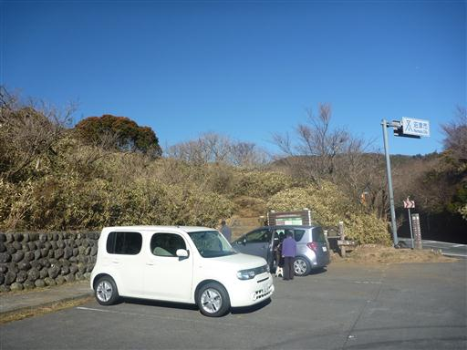
今日は見事な快晴だ。
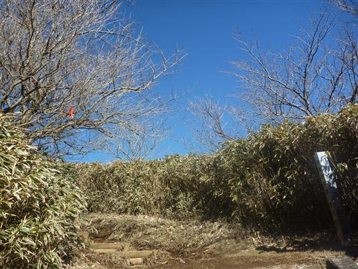
非常に良く整備された道を歩いていく。登山道というより遊歩道という感じだ。
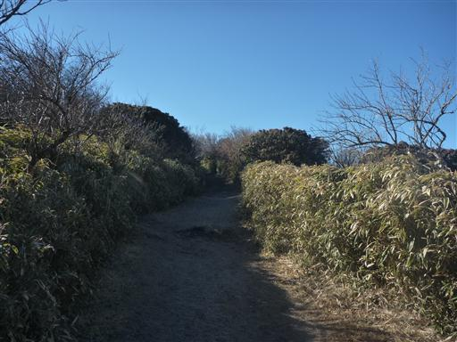
眼下に戸田の街並みが見えている。湾の中に船がたくさん浮かんでいる。
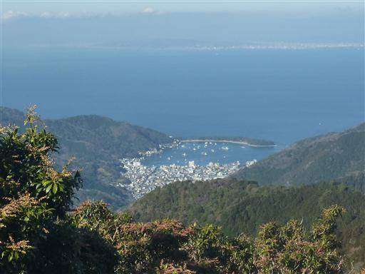
樹林帯の中に入る。森の雰囲気は天城山とよく似ている。
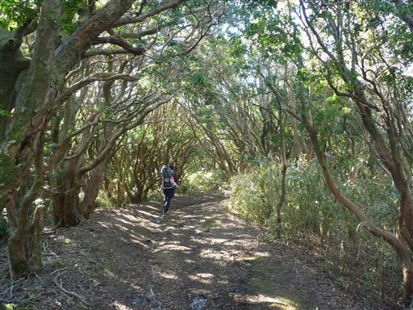
樹林帯は長くは続かない。所々で展望が開ける。
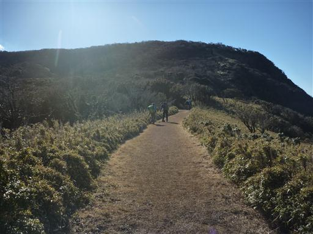
東の方には真っ青な駿河湾が見えている。
駿河湾はいつ来ても真っ青な美しい姿を見せてくれる。
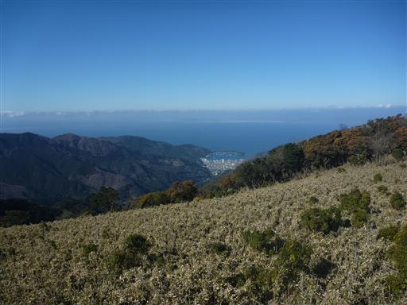
駿河湾の向こうには南アルプスの白い峰々が見えている。
見えているのは聖岳、赤石岳、荒川岳だ。
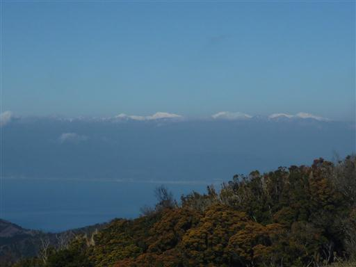
そして振り返ると富士山が見えている。
富士山の南側はしばらく雪が降らないと地肌が見えてくる。
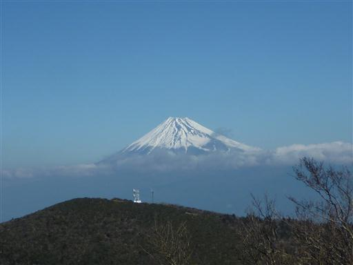
小達磨山を越えると達磨山が見えてくる。笹に覆われたゆったりとしたピークだ。
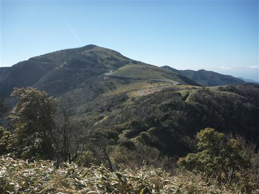
尾根に沿って走る西伊豆スカイラインを横断する。
景観の素晴らしい道路で、昔は有料だったが今は無料開放されている。
駐車スペースは少ないが、ここまで車で来れば登山時間を短縮できる。
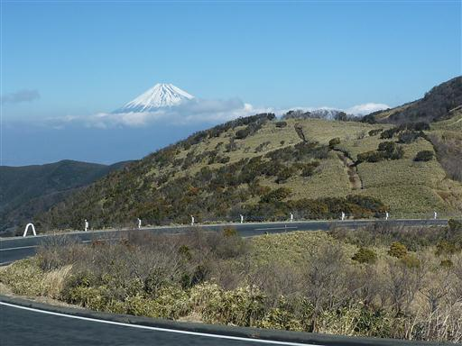
笹に覆われた階段を登っていく。
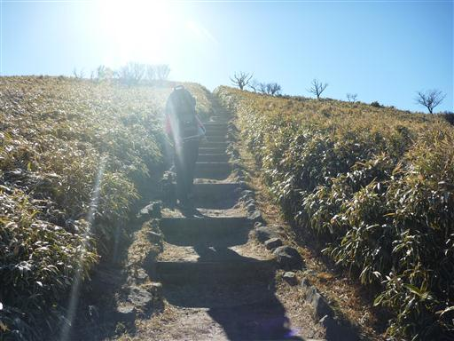
途中で子供がザックから降りると主張し、階段を登りだす。
自らザックを降りると言ったのはこれが初めての快挙だ。
登山道に危険な個所はほとんど無いため安心して見ていられる。
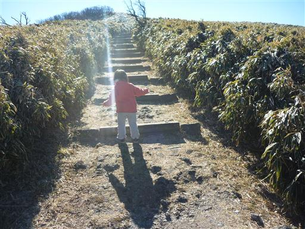
子供がザックを降りると言い出したのは山頂直下だったため
15分ほど歩いたら達磨山山頂に到着する。標高982m。
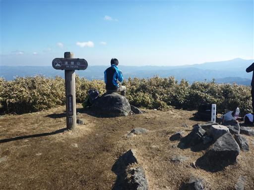
山頂からは360度の大展望が広がる。まず目を引くのは何と言っても富士山だ。
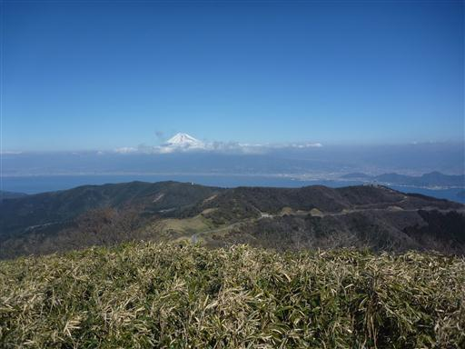
南にはさらに尾根が続いている。この尾根道は天城峠を越えて天城山まで続いている。
ロングコースだがいつか辿ってみたい登山道だ。
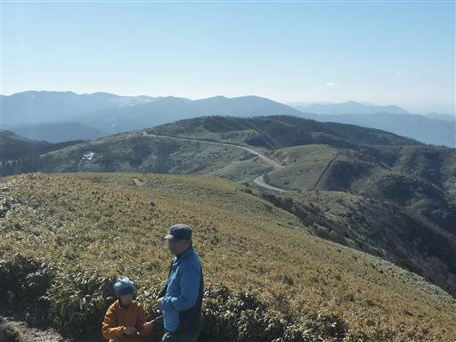
遠くに伊豆半島の主峰・天城山が見えている。遠くから見ると目立たない山容だ。
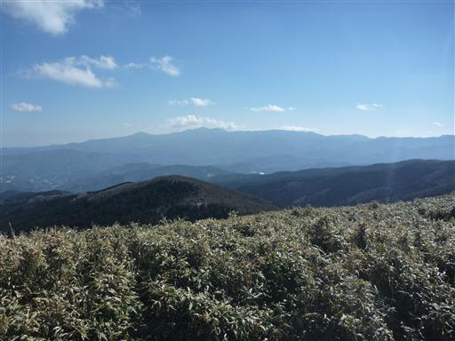
山頂で昼食をとったら元来た道を下山する。富士山を正面に望みながらのんびりと下って行く。
子供はザックに揺られて睡眠モードだ。

昼を過ぎて気温が上がり霜が解けたため、登山道はずっと泥んこ状態だ。
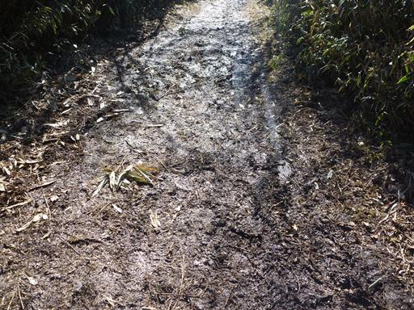
戸田峠の駐車場に戻ってくる。
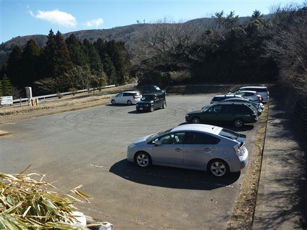
達磨山だけでは物足りないので、妻と子供は駐車場に残して一人で
戸田峠のすぐ北にある金冠山にも行ってみる。
道は舗装されていて観光客でも歩けるようになっている。
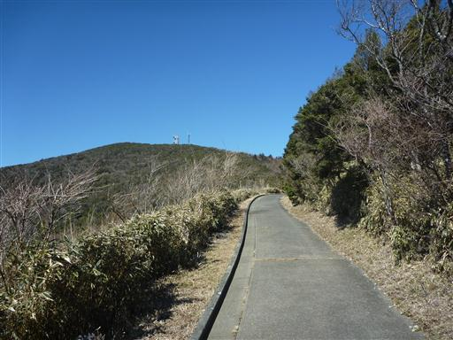
山頂直下だけは登山道っぽくなっている。傾斜はそこそこ急だ。
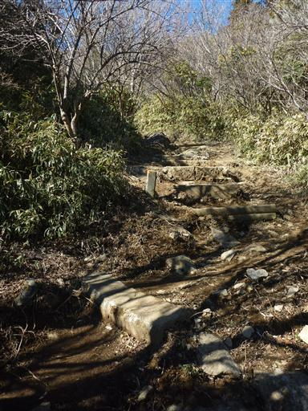
一登りで金冠山の山頂に到着する。標高816m。
山頂にはアンテナが建っている。
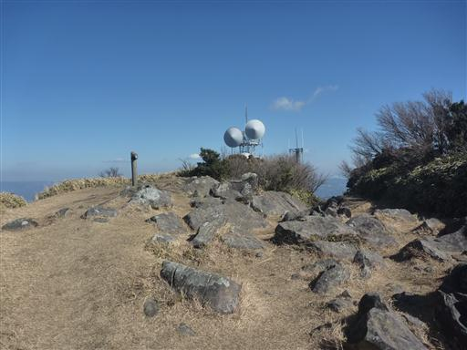
駿河湾のすぐ奥にある低い山並はかつて歩いた沼津アルプスだ。
その奥に薄らと箱根の山々が見えている。
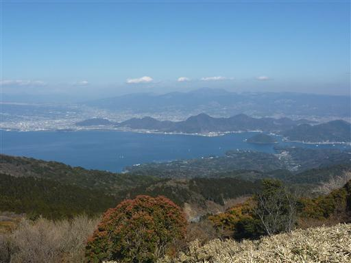
この山からも、もちろん富士山が望める。少しだけ富士山が近くなった。
一通り展望を眺めたらすぐに下山する。
穏やかな気候のもと、青い海と富士山の素晴らしい展望を満喫できた登山だった。
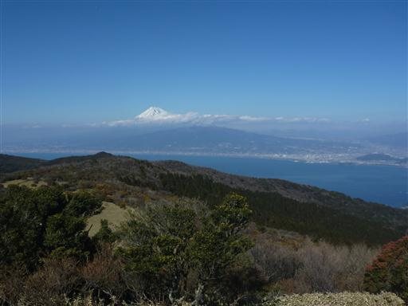